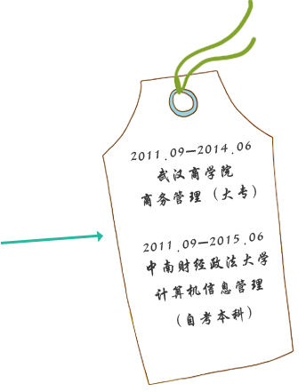
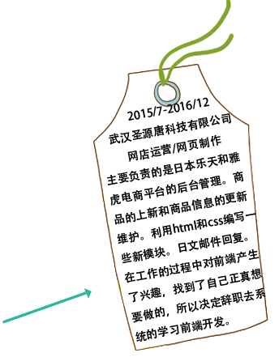

点击
我们没那么弱小，但是也并不强大。
熊馨，23岁，湖北武汉
前端开发
生活
学业
工作
 
人想要活下去，梦想和金钱，都是必需品。
移上去
看看？
技能
1.熟练运用HTML,CSS编写静态页面。
2.熟练运用CSS3实现动画效果。掌握基本的HTML5，会使用canvas绘制图像。
3.熟练运用JavaScript，基本面对对象思维编程。
4.熟练运用媒体查询和bootstrap打造响应式网站。
5.熟练运用jQuery框架，Ajax实现数据交互。
6.熟悉移动端事件，会使用zepto框架。
7.掌握基本的TypeScript语言，会使用angular框架。
8.掌握基本的ES6语言，会使用React框架。
9.会使用less,sass等预处理语言。
10.会使用npm,bower,gulp,webpack等自动化工具。
11.常用编辑器：webstrom,Atom,sublime。
12.工具：基本的ps操作(切图，抠图等),Fireworks。
证书
1.大学英语四级证书
2.日本语能力考N1证书
3.计算机二级证书
4.会计从业资格证书
5.商务策划师（三级）证书
6.驾照
循环往复的四季，是不死心的昨天和可选择的每一天,
紧紧合成了明天。

有什么不好，就算迟了，也要努力到最后!
很感谢您看到这里!